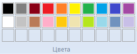
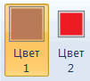

Как рисовать линии и фигуры
В этом уроке мы научимся рисовать линии и фигуры в программе Paint. Без них невозможно осуществить многие задумки.
Например, следующая картинка нарисована только ими.
Линии
Для рисования прямых есть специальный инструмент Линия. Находится он в верхней панели, в окошке с фигурами.
Щелкните по нему, а затем по нужному цвету.
Укажите толщину.
И, если нужно, вид: пастель, масло, акварель, маркер или другой. Делается это через пункт «Контур».
Чтобы провести черту, нажмите на левую кнопку мыши и, не отпуская ее, двигайте в сторону. Растянув до нужного размера, отпустите мышку.
Если она должна быть ровной, перед началом рисования зажмите клавишу Shift на клавиатуре.
Есть еще один похожий инструмент — Кривая линия. Для нее также можно указать цвет, толщину и контур.

Как пользоваться:
- Сначала проводим ровную черту.
- Затем наводим курсор на то место, в котором должен быть изгиб.
- Зажимаем левую кнопку мыши и ведем в нужную сторону, делая изгиб.

Фигуры
Предположим, мы хотим нарисовать овал (эллипс). Выбираем цвет, толщину, контур. Внутреннюю часть можно заполнить цветом с определенным эффектом. Сначала указать заливку — кликнуть по пункту «Цвет 2» и выбрать в палитре.
На заметку. «Цвет 1» — это тот, которым будет начерчен контур, а «Цвет 2» — тот, которым будет заполнен овал.
Далее щелкнуть по «Заливка» и выбрать тип: пастель, масло, акварель, маркер и так далее.
Для рисования нажимаем левую кнопку мыши и, не отпуская ее, «растягиваем» эллипс до нужного размера.
Прямоугольник:
Так же можно выбрать толщину, контур, заливку. Рисуется аналогично.
Многоугольник:
Нажмите левую кнопку мыши и, не отпуская ее, проведите черту. Это будет первая сторона. Чтобы нарисовать следующую, просто щелкните один раз по месту, где должен быть ее конец. Когда дойдете до последней стороны, щелкните два раза вместо одного, чтобы соединить и «закрепить» многоугольник.
Остальные фигуры (треугольник, ромб, стрелки, звезды и другие) имеют те же самые настройки.
Как стереть
Стереть нарисованное можно при помощи инструмента «Ластик». Но он подходит, если область удаления небольшого размера. В других случаях лучше использовать инструмент «Выделить».
Проводим прямоугольник и нажимаем клавишу Delete на клавиатуре для очистки.
Обратите внимание: если кликнуть по стрелочке под инструментом «Выделить», можно выбрать другую форму выделения и настроить его параметры.